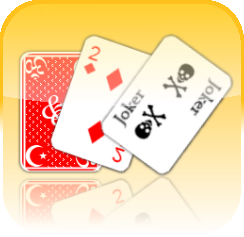
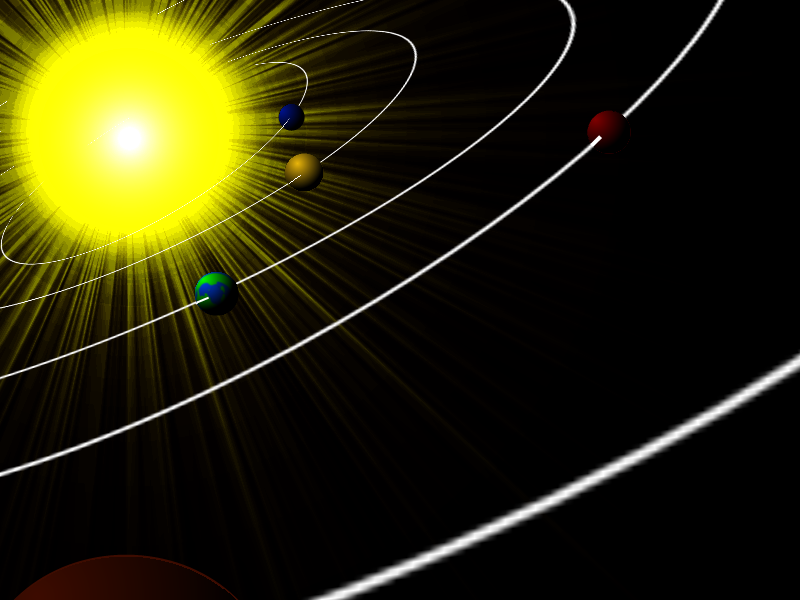
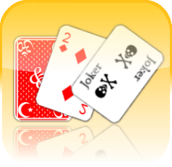
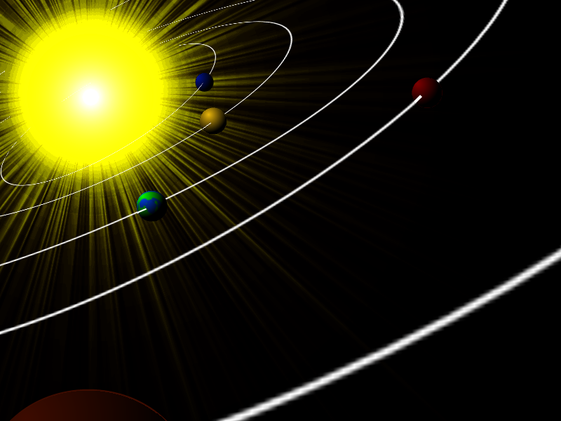

イラストについて
基本的にシャーペンで下書き、ボールペンで清書(？)が多いです。色は色鉛筆でつけます。
ペンタブ持ってないので誰かください(´；ω；｀)
ついにペンタブを買ってしまいました♪ 現在鋭意練習中です☆
描いたものは大体pixivで見られます↓
「みょん」のプロフィール -pixiv
デジタルで書くときはタッチパッドしかありませんでしたが、タッチパッドでもGIMPがあればそれなりのことはできるのでゲーム背景やらこのサイトの背景なんかも自分で描いてたりします。
こんなの描いたり↓
 


